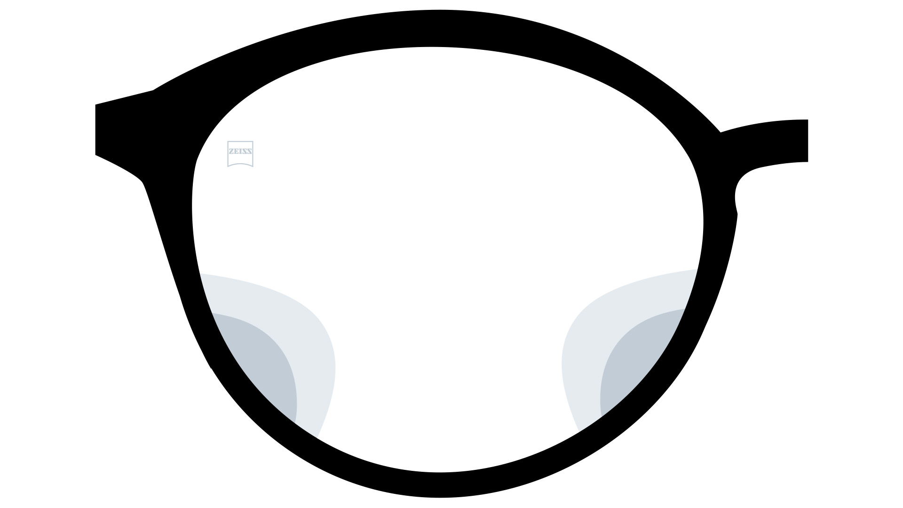
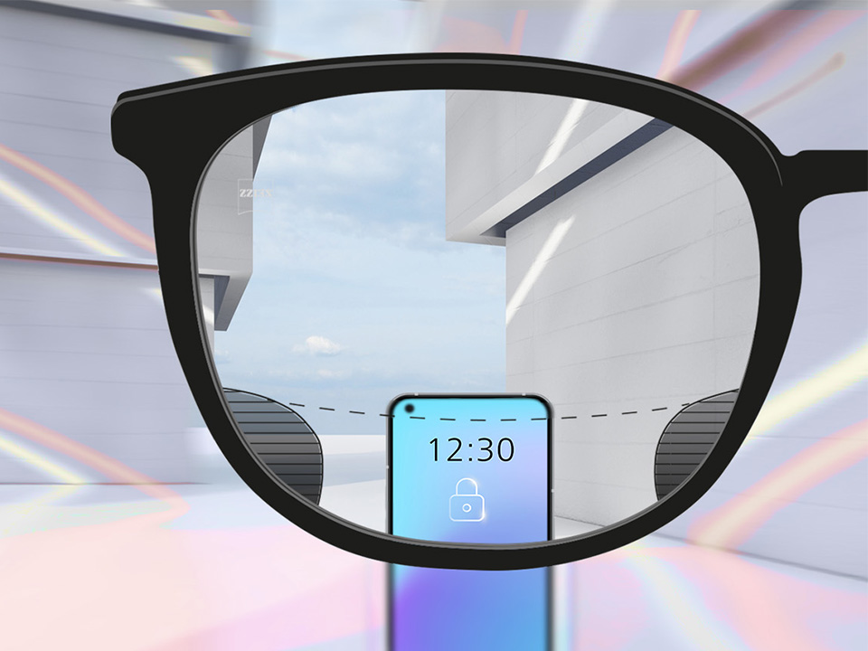
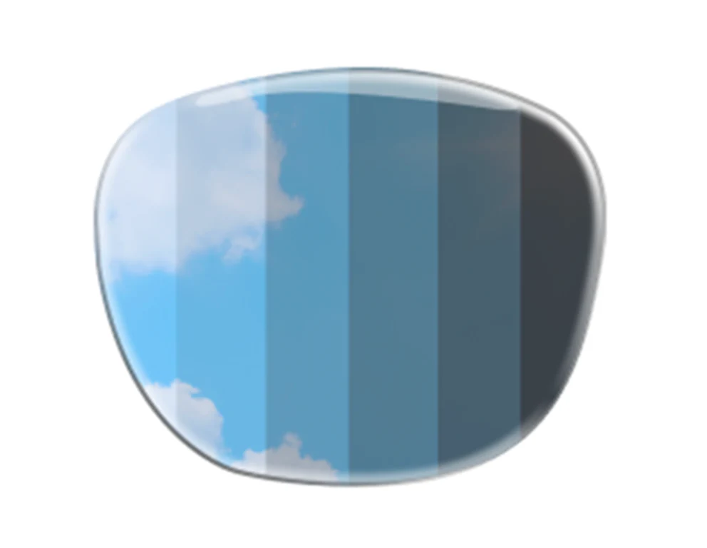

Medical Excellence
Beyond the frames, we provide a curated clinical experience. Our services blend cutting-edge diagnostic technology with a bespoke approach to your ocular health.
Tailored optical engineering to match your lifestyle and visual demands.

Seamless transitions between near, intermediate, and distance vision without the visible lines of traditional bifocals.

Designed for the digital age, these lenses reduce eye strain from prolonged screen use by supporting close-up focus.

Intelligent lenses that automatically darken in sunlight and clear up indoors, providing UV protection and convenience.